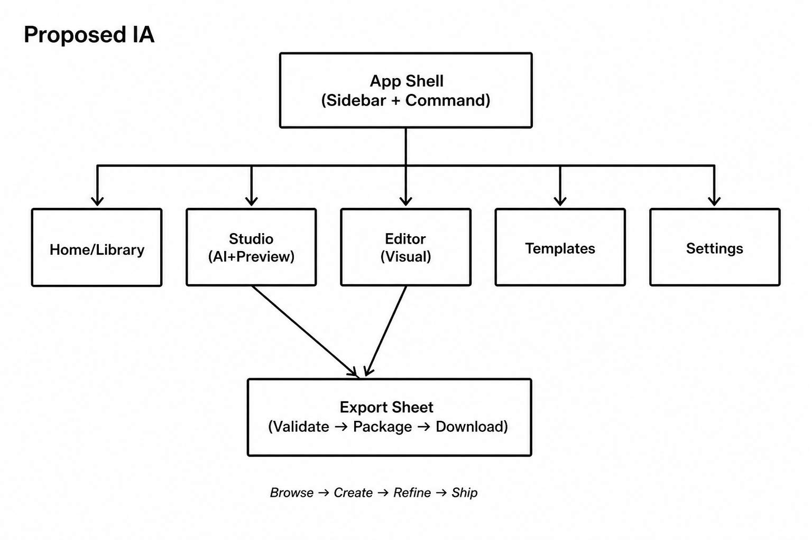
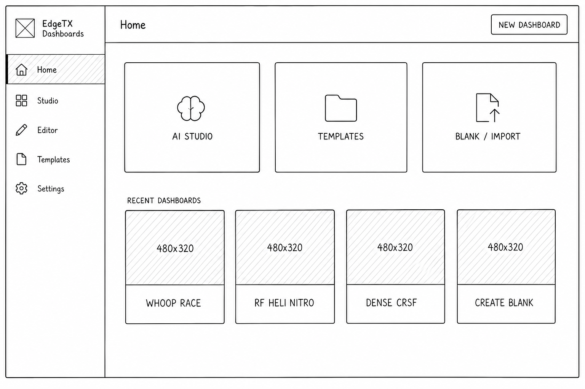
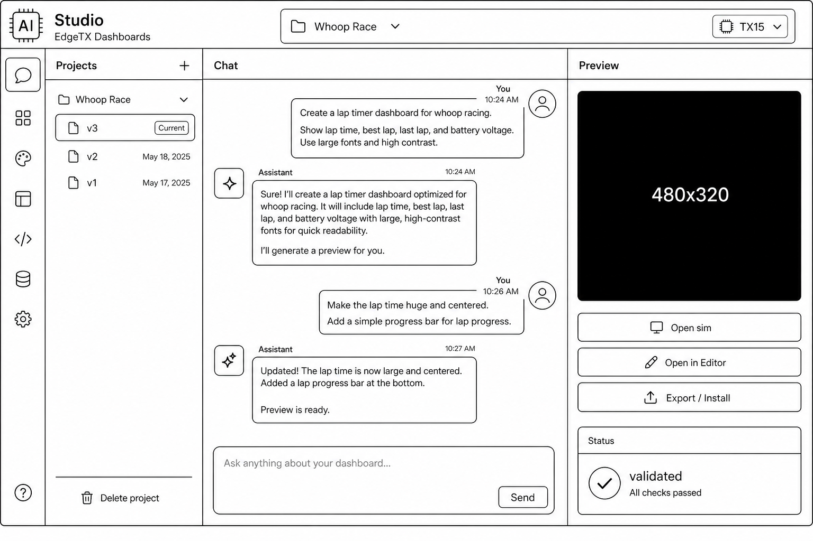
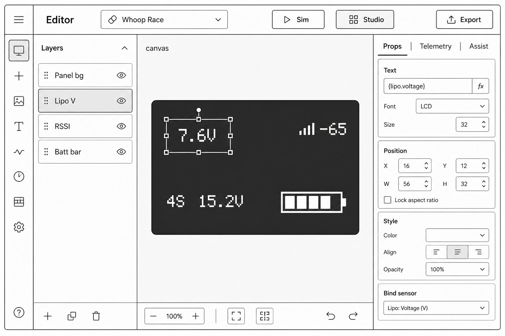
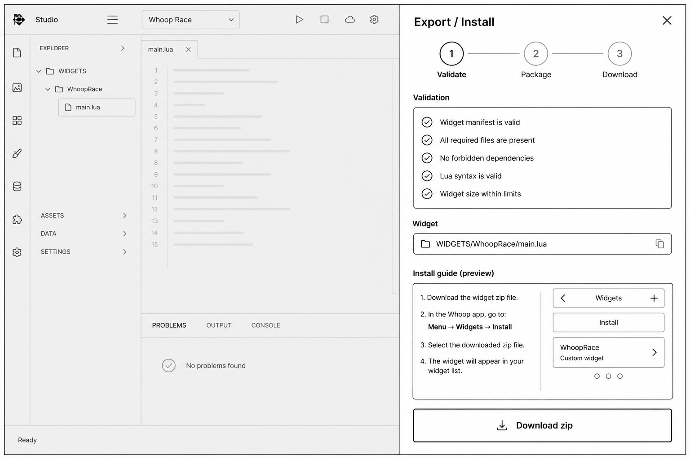

Review sketches for a Shadcn-based redesign of EdgeTX Dashboards.
Goal: clearer product structure (Library → Studio → Editor → Ship),
less modal sprawl, and one app shell shared by AI generate and visual
layout. Boxes are structural only — not visual polish.
Quick visual scan (generated low-fi frames)

IA sitemap

Home / Library

Studio

Editor

Export Sheet
01 — Proposed information architecture
sitemap · mental model
Shift: from “two tabs + modals” to a
project-centric app with four primary destinations and one
persistent shell. Chat history becomes project history. Preferences
become a Settings page (still openable as a Sheet from anywhere).
Current (simplified)
/ Generate — History | Chat+Templates | Artifact preview
One chrome for every surface. Primary nav on the left; project context
and primary actions in the top bar. ⌘K for jump /
new / open template / settings.
Home/Library⌘K SearchNew
Route content (Home / Studio / Editor / …)
03 — Home / Library
entry · projects · quick start
Replace the blank chat + template strip with a proper home.
Three equal entry paths: Describe with AI,
Start from template, Blank / Import.
Recent projects are first-class cards (interactive containers — OK for
cards).
HomeRadio: TX15Protocol: BetaflightNew dashboard
AI Studio
Describe a dashboard in plain language
Describe…
Templates
Whoop, freestyle, RF heli, CRSF…
Browse gallery
Blank / Import
Empty board or paste existing Lua
Open editor
Recent projects
480×320 preview
Whoop Race
Edited 2h ago
480×320 preview
RF Heli Nitro
Edited yesterday
480×320 preview
Dense CRSF
Edited 3d ago
+ New
Create blank
TX15 · Layout1x1
04 — Studio (AI generate + preview)
shadcn ResizablePanelGroup · was Generate
Chat left, radio preview right (always visible once a project exists).
Version select + Open in Editor + Export live in the preview header —
not buried under the LCD. Templates move out of the empty state into
Home / Templates.
Validated. Preview updated — open Editor to nudge layout,
or Export for SD zip.
Refine… attach photo of radio screen optional
AttachSend
Preview
v2
LCD 480×320
Open interactive simOpen in EditorExport / Install
Status: validated ✓ · name ≤10 · BF sensors
Radio feedback notes → refine (photo optional)
05 — Editor (visual layout)
Layers · Canvas · Inspector · same project
Keep the three-pane editor, but align chrome with Studio (same
sidebar, same project). Right inspector uses Shadcn
Tabs: Properties | Telemetry | Assist. Insert becomes
a left Sheet / popover, not a competing menu system.
Layers
+
▢ Panel bg
T Lipo V
T RSSI
▬ Batt bar
T Timer
Insert…
EditorWhoop RacedirtySimStudioExport
canvas + selection handles
Radio preview toggle · zoom · grid
Props
Telemetry
Assist
Text
Lipo V
Position
x 24 · y 36 · w 120 · h 28
Style
MIDSIZE · WHITE · LEFT
Bind sensor: RxBt ▾
06 — Templates gallery
dedicated route · filter · fork
Full-page gallery with protocol / craft filters. Primary CTA per card:
Open in Editor. Secondary: Generate with
AI (uses template prompt). Avoids crowding the Studio empty
state.
TemplatesAllBetaflightRotorflightCRSFSearch…
whoop board
Whoop Race
BF · TX15
Open in Editor
freestyle
Freestyle
BF · TX15
Open in Editor
heli electric
RF Heli Electric
RF · TX15
Open in Editor
dense crsf
Dense CRSF
CRSF · TX15
Open in Editor
07 — Export / Install Sheet
shadcn Sheet · stepped flow
One Ship surface reachable from Studio and Editor. Steps: Validate →
Package → Download zip / follow install guide. Validation failures
stay inline in the sheet (not a disconnected dialog).
Promote Preferences to a routed page with a vertical subnav (Shadcn
pattern). Same content: Appearance, AI, Simulator, plus
Defaults (radio, protocol, layout profile) so Home /
Studio inherit them.
Settings
Appearance
AI providers
Simulator
Defaults
Appearance
Theme
Light
Dark ✓
Midnight
Ocean
Themes style the app chrome. Radio LCD canvas stays dark.
09 — Mobile (Studio)
bottom tabs · sheet preview
Collapse the sidebar into bottom tabs. Preview becomes a bottom Sheet
(“Show radio”). Editor remains best on desktop; mobile deep-links can
open Studio + Export.
status
Whoop RacePreview
Add GPS sats top-right
Updated preview · validated
Message…
↑
HomeStudioTemplatesMore
10 — Alternate Studio layouts (pick a direction)
A/B/C for review
A — Chat-primary (recommended)
Wide chat, narrow sticky preview. Best match for “describe →
refine” and current agent streaming.
Preview always on desktop
Export in preview header
Versions in left rail
B — Preview-primary
Large LCD center; chat as a right Sheet / drawer. Feels more like a
design tool, less like ChatGPT.
Stronger radio-first mindset
Harder for long agent transcripts
Good if AI is secondary to visual edit
C — Unified workspace tabs
One project URL with tabs: Studio | Editor | Files | Export. No
separate /studio vs /editor routes — only mode switches.